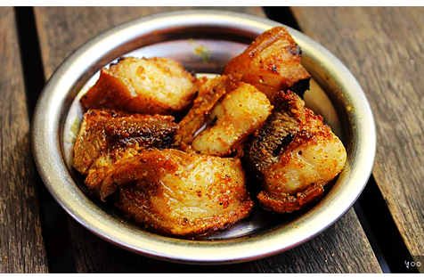

Rajkhani fry i.e Testicle fry

Are a gym rat and you want to boost your testostrone and be like liver king?
Then this recipe is for you.
Follow the recipe to get jacked.
Ingredients
- Testicle (any type: bull testicle goat testicle)
- Salt
- oil
- turmuric onion tomato (optional)
Steps
- Cut the testicle into edible pieces.
- Add oil in pan and let it heat.
- If you have onion or tomato add both of them first else add your testicle
- Fry your testicle until it's golden brown.
- Add salt and other spices if you have any.
- Eat this as a pre workout meal and see the result in 30 days.
Disclaimer: you can trust this recipe for boosting testostrone as much as you trust that mike o'hearn / liver king is natty.
Bhutan
It's very unique recipe and provides unique flavour and it's very easy if you don't know how to cook it
Becaues you will be following my recipe and i don't add more than 2-3 things in my recipe.
Ingredients
- Aandra bhudi i.e stomach and intestine
- Water
- salt
- other spices like chilly tomato etc.(optional)
Steps
- Take a pot and fill it with water
- Take your aandra bhudi and put it in a pot
- Boil for 10 to 15 minutes
- Take out the aandra bhudi and wash it thoroughly
- Now take a frying pan and add oil and let it heat.
- Add your aandra bhudi and stir fry until it becomes brown.
- add salt and spices of your choice and serve it.
Kera ko momo
I don't know how to make this but thought would be a good idea to add this here.
Ingredients
Steps
- here's a link to the recipe